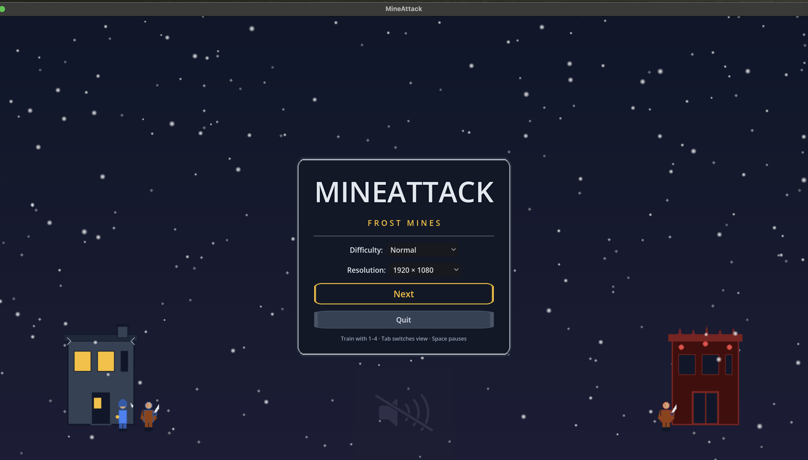

ARCANE
Crystal engineering and battlefield control.
- Wizard specialization
- Vision and shelter tech
- High-risk burst economy
MineAttack visual iteration
Explore a stronger first impression: stamped-steel command UI, clearer faction identity, and a menu that feels connected to the frozen volcanic mine.

Choose your doctrine
Crystal engineering and battlefield control.
Direct siege power and aggressive pressure.
Mining logistics, towers, and durable infrastructure.